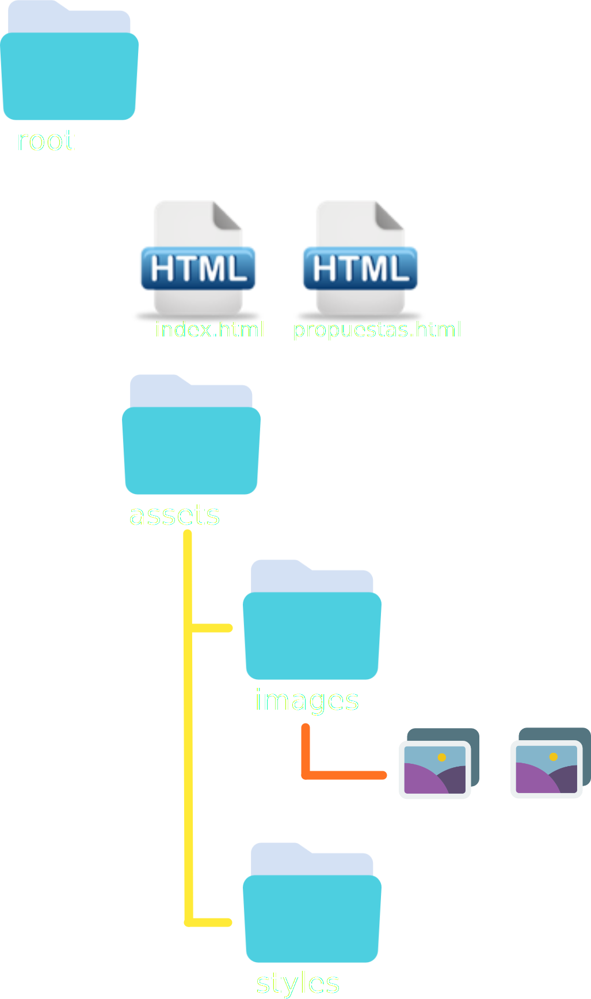

--José Martí
Este es el primero de doce PAEs que te ayudarán a crear el proyecto que hemos llamado «El Blog del mundo» donde encontrarás y
publicarás
tu
investigación y opinión de algunos temas de interés global.
Escogerás una pareja con la que trabajarás los próximos meses y nuevamente te aconsejamos buscar una pareja de tu nivel académico. No tomes esta decisión
a
la
ligera, confiamos en que aprenderás mucho del camino que recorras.
Al ser un trabajo en parejas a partir de este momento nos referiremos a la primer persona del equipo con este ícono 0: y a la segunda persona del equipo con su correspondiente 1: .
0: Crea un nuevo repositorio en gitHub, el nombre que usarás para dicho repo será: grupo-apellidoPersona0-apellidoPersona1-blog_del_mundo si olvidaste cómo
hacerlo, siempre puedes consultar las instrucciones del
PAE
0:
No olvides añadir a 1: y a tu profesor como colaboradores del repositorio .
En esta sección nos ocuparemos de entender la estructura de archivos . Observa el siguiente diagrama:
Como todos tendremos un nombre diferente para la carpeta de nuestro repo, a partir de ahora le llamaremos root . Notarás que dentro del directorio root hay 2 archivos html y una carpeta llamada assets que a su vez contiene a las carpetas images y styles.
No olvides siempre respetar las reglas que te presentamos a continuación, todos los PAEs asumen que seguiste la estructura propuesta y respetaste las reglas. Te ahorrarás muchos dolores de cabeza .
Crear carpetas y archivos en VCS es muy sencillo. mira el siguiente video con instrucciones precisas de cómo hacerlo.
0: Clona el repositorio que creaste en el paso anterior, si olvidaste cómo clonar un repositorio consulta el PAE 0:
Resuelve las siguientes tareas:
0: Haz add, commit y push . Avisa a 1: que puede empezar a trabajar.
1: Acepta y Clona el repositorio que te ha enviado 0: , si olvidaste cómo clonar un
repositorio
consulta el PAE 0:
Dentro de root encontrarás un archivo index.html y una carpeta
assets Resuelve ahora las siguientes tareas:
0: Empieza haciendo pull para que recibas los últimos cambios de 1: . Ahora en index.html intenta usar las siguientes etiquetas para construir la estructura básica de HTML:
0: Inserta un comentario para indicar, cuando sea el caso, dónde abre y dónde cierra cada etiqueta. Haz add, commit y push . Avisa a 1: que puede empezar a trabajar.
1: Empieza, como siempre con un pull para obtener la versión más reciente del repositorio. En propuestas.html intenta usar las siguientes etiquetas para construir la estructura básica de HTML:
1: Inserta un comentario para indicar, cuando sea el caso, dónde abre y dónde cierra cada etiqueta. Haz add, commit y pull y avisa a 0: que haz terminado.
¿Te has dado una vuelta por tiktok últimamente? ¿Qué tal las comidas familiares o con amigos? ¿No te parece que este acceso ilimitado a la expresión está creando una sociedad donde muchos de nosotros hablamos demasiado sin saber y muchas veces sin pensar?
Tener una opinión es bueno, expresarla es sano, informarse es inteligente, no caer en confrontaciones con quien opina diferente es sabio.
«El blog del mundo» es un espacio donde hablarás de temas que te interesan. Pero no lo harás a la ligera. Aprenderás a informarte en
fuentes confiables y a estructurar tus argumentos y opiniones de
manera
oral y escrita.
A lo largo de estas doce semanas haremos un blog con 4 temas principales (2 por persona) y con muchas entradas para manejar los sub-temas. Lo que deben hacer esta semana es proponer a sus profesores cuáles serán los temas a tratar.
Seguramente desde que te dijimos que podrías elegir temas de trabajo tienes algunas ideas en la cabeza. ¿Un deporte?, ¿Algún área del conocimiento universal?, ¿Un pasatiempo?, ¿Algun asunto político?
Revisa esta lista de requisitos para
cada tema.
0: Empieza, como siempre, haciendo un pull para obtener la versión más reciente del repositorio. Encontrarás un archivo llamado propuestas.html donde 1: ha escrito ya la estructura básica en HTML. Dentro de body escribirás tus dos propuestas para temas del blog respetando la siguiente estructura:
0: haz add, commit y pull y avisa a 1: que ya puede empezar a trabajar.
1: Una vez que 0: te ha notificado que es tu turno, haz pull para obtener la versión más reciente de su repo.
Ve al archivo propuestas.html y dentro de body escribirás tus dos propuestas para temas del blog respetando la estructura de código que dimos en el ejemplo.
Haz add, commit y pull y avisa a 0: que has terminado.
0: 1: Cuando sus profesores les notifiquen, además de la rubrica y la calificación no olviden revisar los comentarios respecto a sus temas, pues estos tendrán que ser aprobados por sus profesores.
Nuevamente no es necesario que hagan algo para entregar su trabajo. Sin embargo hemos preparado una lista de verificación para su tranquilidad respecto a la entrega.
Observen como en este flujo de trabajo cada quien toma un turno para editar el repo. Esto es porque cuando editas la misma línea del mismo archivo al mismo tiempo git arrojará un error de merging a quien haga push al final. En las próximas semanas aprenderemos cómo conciliar estos errores para ser mucho más productivos.